Network Analysis: Service Area and Route Analysis
In the previous exercise, we explored Multi-Criteria Decision Analysis to identify where to expand the Citibike network in Brooklyn. In this exercise, we will move into network analysis, looking at the placement of public libraries across Brooklyn. Specifically, we will highlight the walking distances to each library, as well as highlight libraries that are over 1/2 mile from a subway station.
This is an introduction to network analysis. If you'd like to explore other network analyst tools in-depth, visit the ESRI Tutorial site. Data for the ESRI tutorial can be found at the ESRI site.
Datasets
To create this map we will be using the following datasets:
Borough of Brooklyn - from New York City boroughs. Download from NYC Open Data – Department of City Planning. Choose "Export", under "Borough Boundaries & Community Districts".
Brooklyn Public Library Branch Locations. Data available from Brooklyn Public Libraries in JSON format. A point feature csv for the dataset can be found in the data packet below.
LION Single Line Street Base Map. Data available from NYC Department of Planning. NYC Planning - Open Data. For more information about the LION files and what each of the fields means take a look at the useful LION data dictionary.
MTA Subway Station Locations. Download from NYC Open Data - Metropolitan Transportation Authority (MTA). Choose "Export", under "Subway Stations", and download in Shapefile format.
A packaged file of the above data can be found in a downloadable package - brwn.co/networkanalysis. Original data assets (listed above) are located in the directory.
Preprocessing
Launch ArcMap and save project as “Network_Analysis_BK.” Load the following layers:
Border of the Borough of Brooklyn (for geographic reference)
LION dataset
MTA subway stations
Brooklyn Public Library Locations.
For Brooklyn Public Libraries, you'll need to import the csv in the CRS WGS 1984. If you don't set the CRS upon import, your libraries will not appear within the Brooklyn boundary.
Preprocessing: Clipping Layers to Brooklyn
To begin, we want to make sure that all of the datasets we will be using are clipped to the shoreline of Brooklyn. This will prevent any mistakes when adding data to the geodatabase, as well as lighten the computation required to perform some of the analysis.
Limiting to Brooklyn Borough Boundary:
To quickly limit your project to the Brooklyn Borough Boundary, add the dataset and select the Select Features tool from your menubar. Once selected, click on Brooklyn and an outline should appear around the borough. Now, simply right-click on the layer and navigate to Data > Export Data and export a shapefile to a folder within your active directory.
Clipping MTA Subway Stations:
To clip the MTA Subway Stations to the Brooklyn Boundary, import your MTA dataset and navigate to Geoprocessing > Clip in your menu bar. Set the Input Features to MTA Subway Stations and Clip Features to the shapefile you just created (Brooklyn Borough Boundary) and select save.
Preprocessing: Creating GeoDatabase
Unfold your Catalog menu bar on the right hand side of your window and on the top select the Connect to Folder icon. Navigate to your working drive and select ok. We will give our DB the name BKLibraryAnalysis.gdb. Next, within your geodatabase, we will create a new Feature Dataset. To do so, right click on your newly generated geodatabase and select New > Feature Dataset. Give it a similar name and save it to your directory.
Preprocessing: Selecting from LION
Within the LION Dataset, we only want to use roads that are found within Brooklyn and have pedestrian walkways. To do so, enter the following filter within the Selection > Select by Attributes menu. In the query builder, enter FeatureTyp <> 'F' AND RBoro = 3 AND TrafDir <> '0' AND NonPed <> 'V'. A detailed writeup on each of these fields can be found in the metadata (link above). Once you have your items selected, navigate to Data > Export Data and export a File and Personal Geodatabase feature classes file into the newly generated Feature Dataset. Make sure that you navigate into this directory, as opposed to the geodatabase directory.
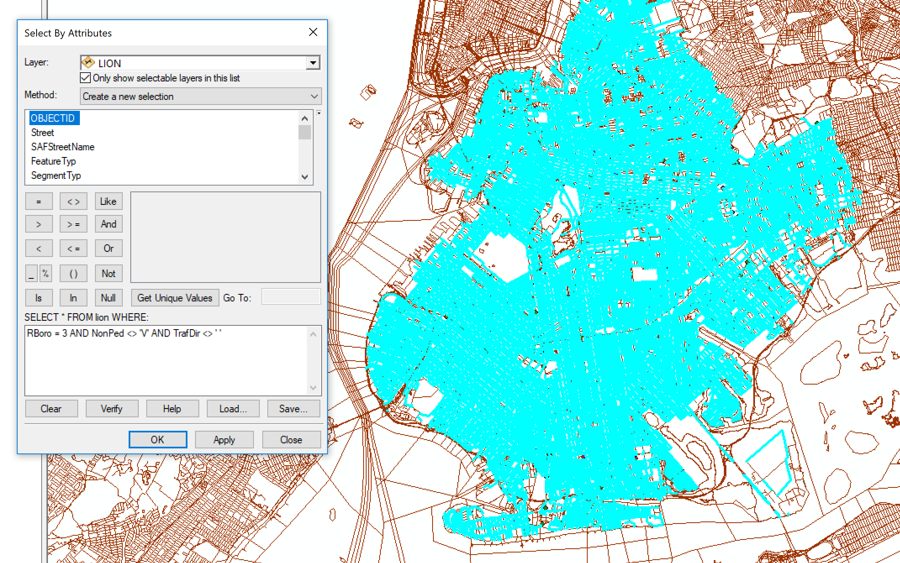
Preprocessing: Creating Feature Dataset
Now, you should import your remaining features (libraries, subway stations, and the borough boundary) to the Feature Dataset by navigating to Import > Feature Class (Multiple). Select each of your layers and select OK. Now remove all old layers.
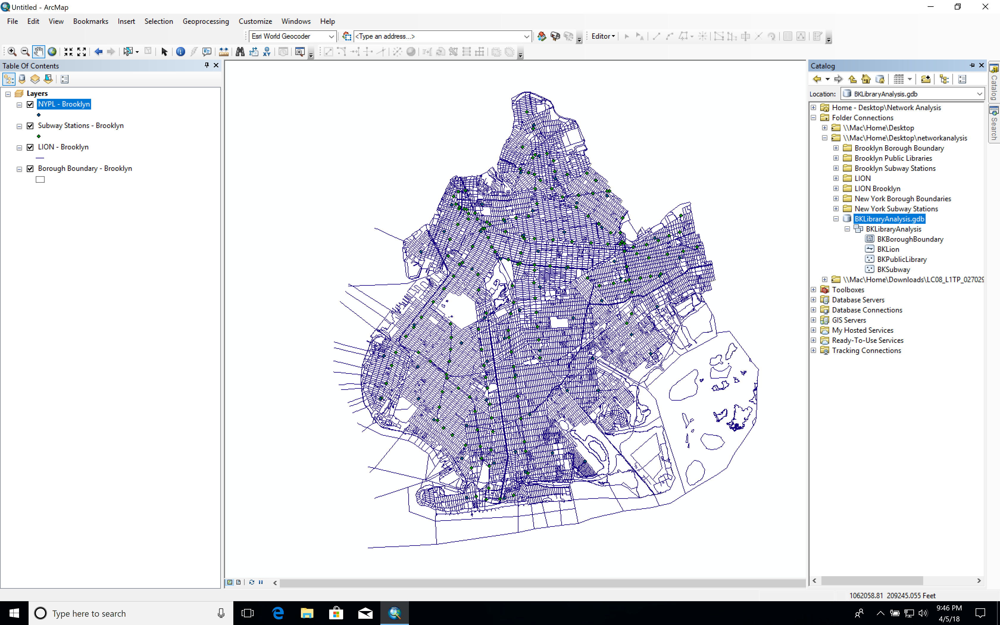
Preprocessing: Creating Network Dataset
Now we will prepare a network dataset. Right click on your Feature Dataset and navigate to New > Create Network Dataset and follow the steps below:
On the landing page, the default name (BKLibraryAnalysis_ND) is fine. Select the most up-to-date version. In our instance, this is 10.1
On the second page, select only the BKLION dataset.
On the third page, indicate that you would like to turn this into a network dataset (selected by default).
Under connectivity, leave the settings as is.
On the fifth page, you'll be asked about how you'd like to model the elevation of your dataset. Select
None.On the sixth page, you'll be asked about attributes of your network. Since we are building a network from the LION dataset, we will be provided with two rows: Length & Road Class. Remove Road Class, as we won't be using this for our network build.
On the seventh page, we will bypass these settings, as we won't be assigning a travel mode (measuring by length).
On the eight page, we will be asked to establish driving directions. Again, this is not the purpose of our network, so we will select
No.We will then be asked if we want to build a
Service Area Index. Check the box.Select
Finishand ArcMap will begin building the network. Once created, it will prompt you if you'd like to Build the network. SelectYes. You'll again be prompted to whether or not you'd like to add all feature classes to the map. SelectYes.
You've now generated your first network dataset.
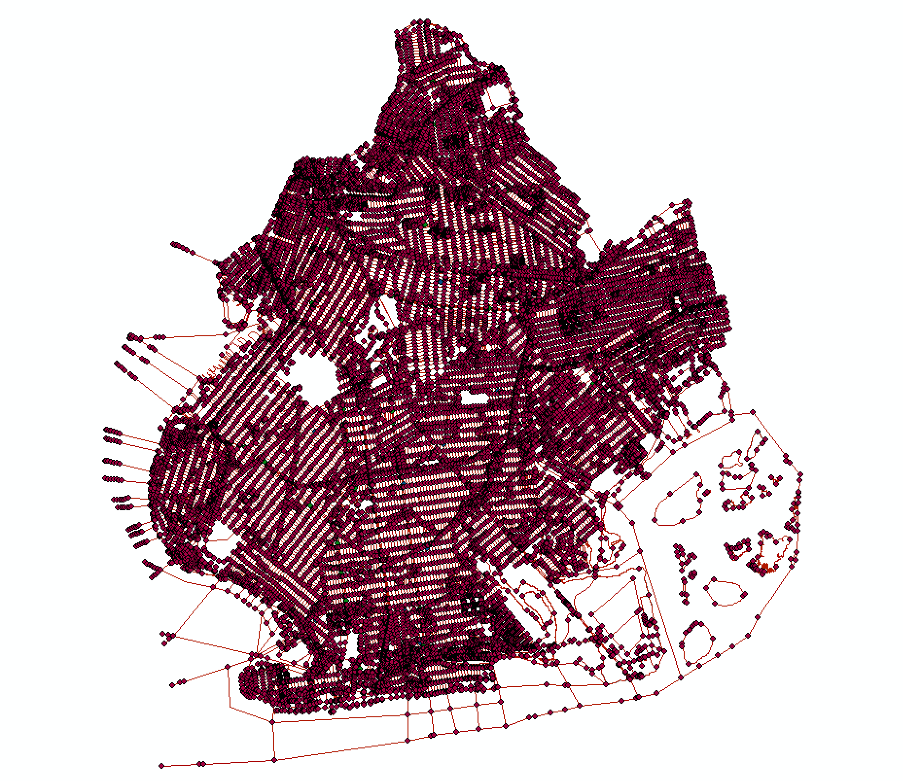
Service Areas
We will now generate a service area for the LION Database. Navigate to Geoprocessing > ArcToolbox. In the ArcToolbox, expand Network Analyst Tools, open its child Analysis and select Make Service Area Layer. Use the inputs below
Set your
Input Layerto your newly generated Input Analysis Network (BKLibraryAnalysis_ND).Give the output name
LibraryServiceArea.Leave the Impedance Attribute set to Length and set the
Travel To or FromtoTravel To.Next, we will set our walking distance to the library in eighth-mile intervals. Therefore, enter
660 1320 1980 2640.Lastly, expand the
Polygon Generation Optionsand change thePolygon Typeto Detailed Polys.
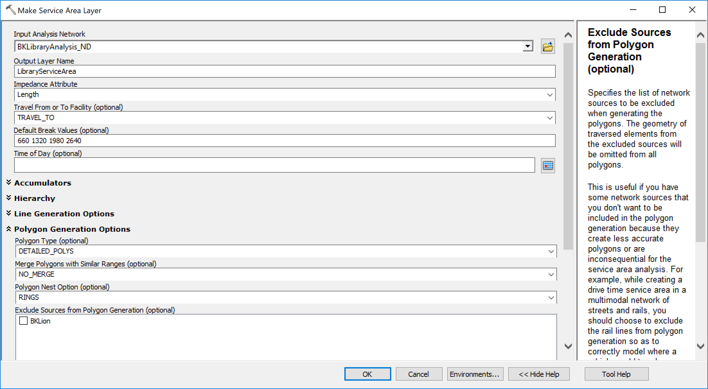
Once you select OK, you might be confused as to why nothing on the surface has changed. We first need to add the features from which the distance will be visualized. To do so, navigate again to Geoprocessing > ArcToolbox. In the ArcToolbox, expand Network Analyst Tools, open its child Analysis and select Add Locations.
For
Input Network, select LibraryServiceAreaFor
Input Locations, select NYPL - Brooklyn, running your service area analysis around the Brooklyn Public Library locations.All other features can remain the same. Simply select
OK.
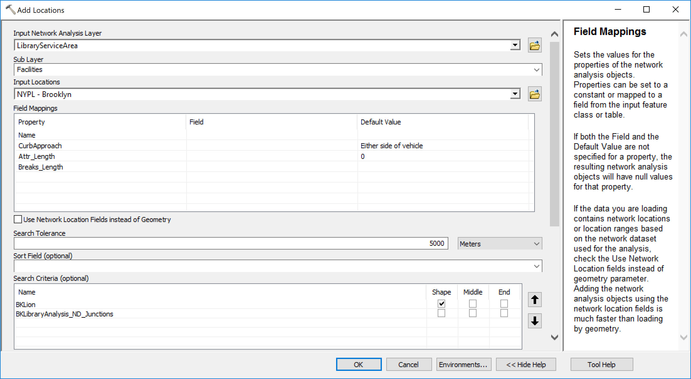
Lastly, to actually visualize the analysis, right click on your network layer and select Solve.
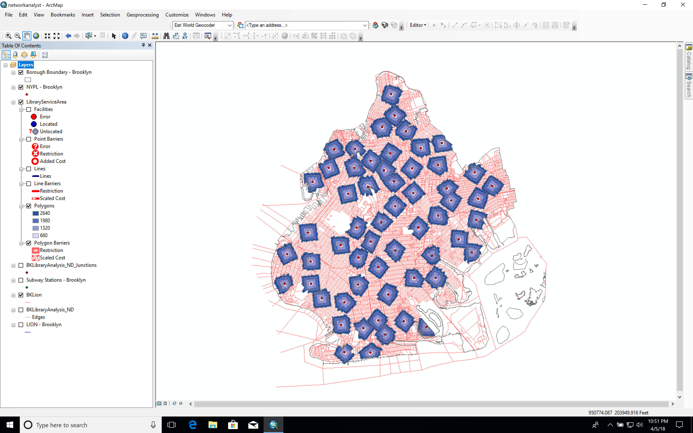
Rasterizing for Multi-criteria Decision Analysis
In the tutorial on Multi-Criteria Decision Analysis, we've used Euclidian Distance to find areas that are equally distant from points of interest. Euclidean distance is measured along a straight-line, ignoring other geographic features. In Network Analysis, we use Service Areas to find areas that are equally distant from a point of interest along all available paths in a network (in our case a pedestrian network). Thus, in certain instances it may be more beneficial to use Service Areas instead of Euclidean Distance as a decision layer in MCDA.
In order to create a decision layer from Service Areas, we need to convert Service Area polygons to Raster dataset, and then reclassify the resulting raster accordingly (in this example, we will prioritize areas closer to libraries):
In the ArcToolbox, expand
Conversion Tools, openTo Rasterand selectFeature to Raster.Set Input features to Service Area\Polygons, and set the cell size to 20 (feet).
Click on
Environments...and set the the processing extent to Same as Brooklyn Borough Boundary.Save output as Lib_ServiceAreas_raster in your StreetLib GeoDatabase.
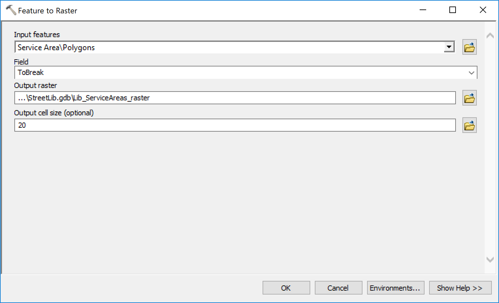
In the ArcToolbox, expand
Spatial Analyst Tools, openReclasstoolbox and selectReclassify.Set Input raster to Lib_ServiceAreas_raster and set new values in the reclassification table.
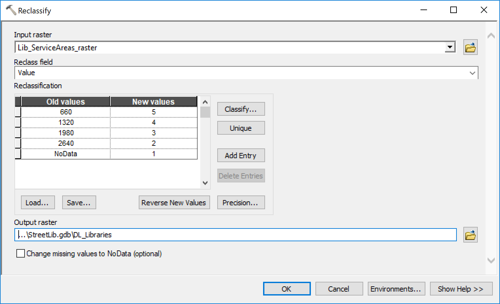
We now have a new raster compatible with the decision layers from MCDA tutorial. Note that we've prioritized areas closer to the libraries in this example.
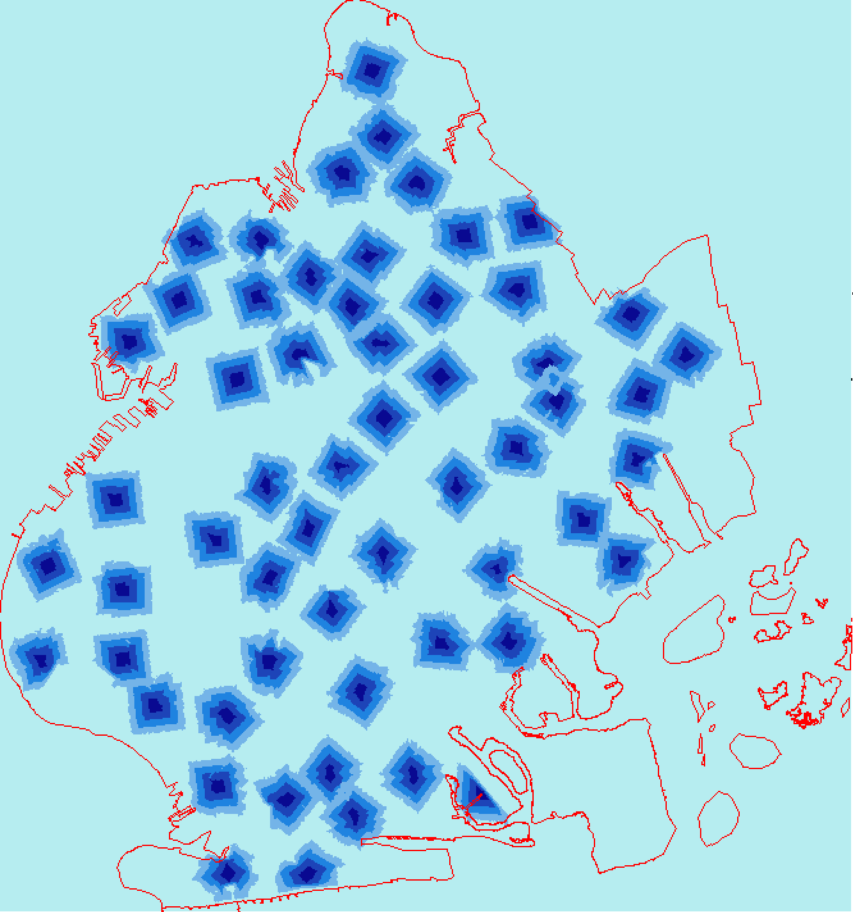
Route Analysis
The last thing we'd like to accomplish from this exerise is highlight libraries that are beyond 1/2 mile from the nearest subway stops. This will require us to generate walking routes from libraries to the nearest subway and selecting those that are greater than 2460 feet away. To do so, add your Network Analyst tool to your interface by navigating to Customize > Toolbars > Network Analyst Tool. Once added, select Network Analyst from the menu and select New Closest Facility. A new window should appear to the left of your layers panel with the title Network Analyst.
Right click on
Facilities, navigate toLoad Locations, and in the prompt, select your Subway Station layer.Right click on
Incidents, navigate toLoad Locations, and in the prompt, select your New York Public Libraries layer.In your layers panel, right click on
Closest Facilityand selectSolve. Now you've generated the quickest walking routes from each Library branch to the closest subway.
Now, we want to highlight libraries located over 1/2 mile from the nearest subway station. To do so, we will need to join our Routes layet with our NYPL layer. Right click on the NYPL layer and select Joins. We will do a join based on spatial location, generating a new layer with Libraries and walking distances.
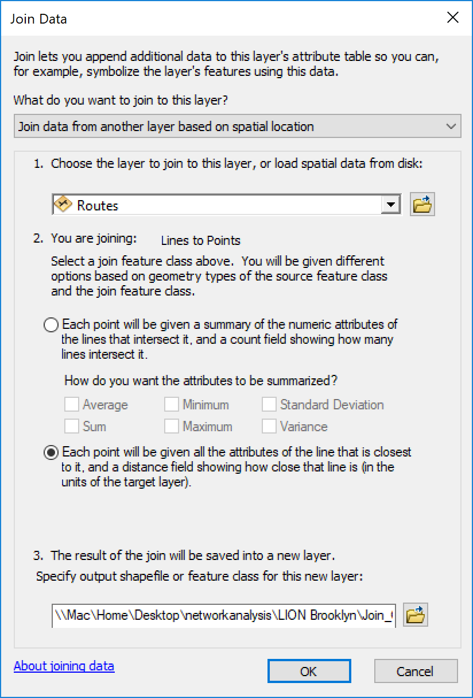
After a simple select by attribute and a bit of styling, we have a map highlighting the 13 NYPL branches in Brooklyn located over 1/2 mile from a subway station, as well as 1/8mile increments around each library branch.
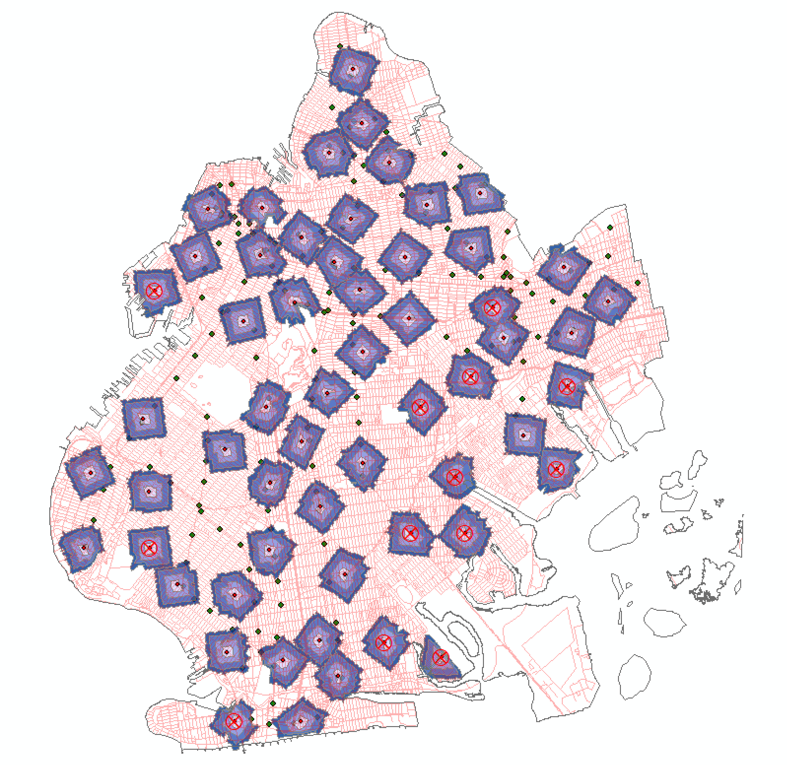